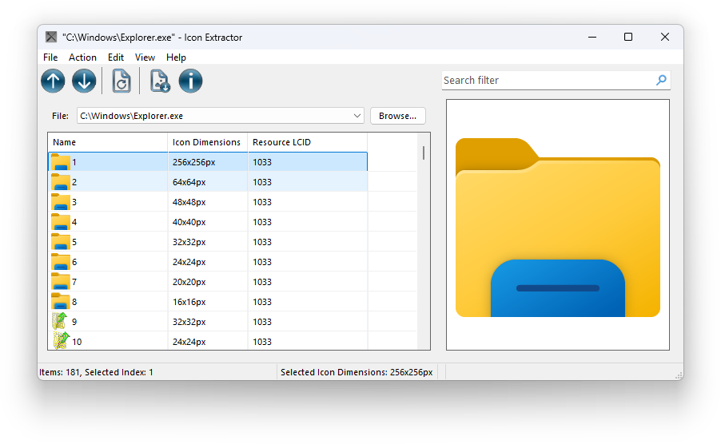

Extract all from all.
Icon Extractor is an utility for extracting icons from 32-bit and 64-bit Windows® executable PE files.There is a list of main features that allows you to work with icons more better!
Major features
1
Our app supports Windows Vista even!
2
Our app has a very small size, so you won't have to worry about enough disk
space.
3
Our app has a simple user-friendly interface, but if you don't like it for
some reason, there
is a console mode for you.
Download Version 2.0.1
Screenshots

Main window previewChange Log
Patch 2.0.1
February 20, 2026Fixed Bugs
- Some string localizations was fixed.
- After closing file, some controls may still be enabled for user.
- Some critical files were not be included in setup distributives.
- Updates System may return an incorrect repository asset.
- Automatic update checking actually does not working.
- When minimizing and restoring main window, controls may behave weird, if Tool Bar and/or Status Bar are toggled on.
- Some controls may not change style despite application settings.
Changes
- Many old legacy and unused code were removed.
- API code has been optimized.
- Update System has been reworked.
Release 2.0
February 15, 2026Key Features
- New improved design.
- Drag & Drop support.
- Windows on ARM64 support.
- Improved user-accessibility and new experiences.
- More customizations.
- OTA (Over The Air) updates.
- Favourites & Recent Files: go to your last files easily and quickly.
- Extract icons to all sizes and from more file kinds, for example, from iOS & iPadOS packages
- Icons copying, searching and sorting.
- Easter eggs
Removed features
- Setting custom drive icon.
- Setting any icon as main app icon.
- Icon preview in another window.
Fixed Bugs
- In previous versions working with large files (or files with many icons) may cause crash.
Changes
- Segoe UI as default font for better readibility & experience.
- NET Framework 4.6.2 as new engine version (instead of 4.8) for better compatibility.
- Optimized and refactored code.
Release 1.2
August 12, 2023- Fixed old bugs.
- Now you can open the file from Explorer
Release 1.1
August 7, 2023- Fixed a bug that made it impossible to put a custom icon on the disk
- Now you can also save icons in PNG format
Release 1.0
June 24, 2023- The first release.